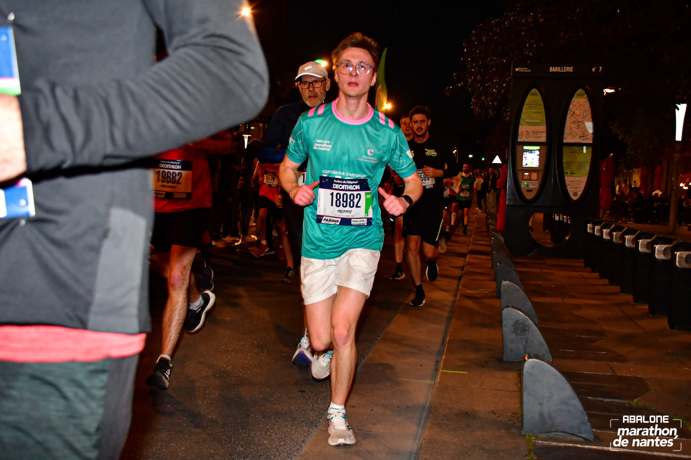
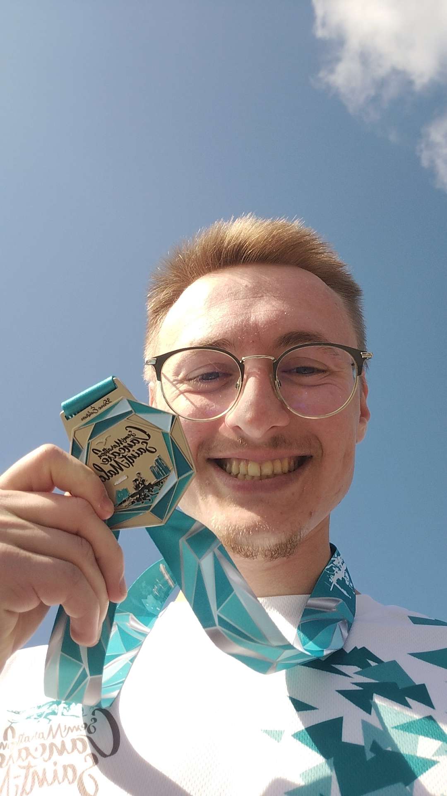
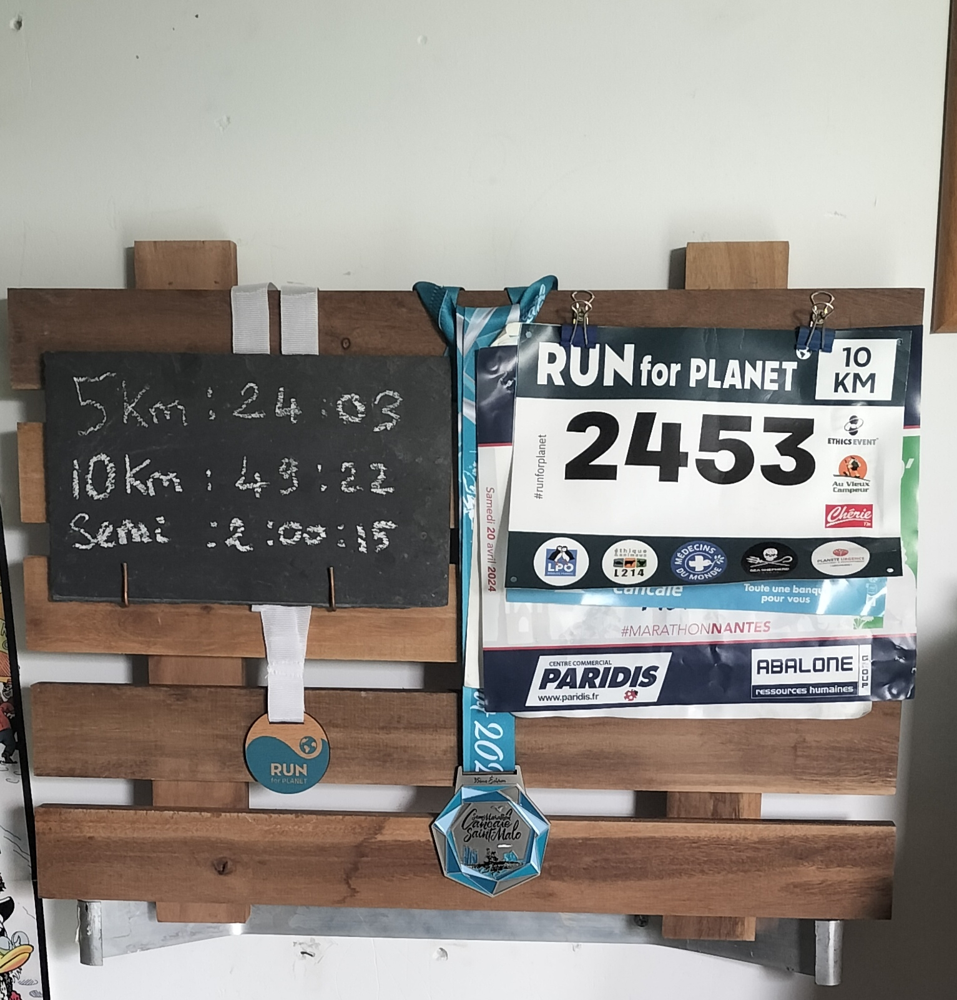

Course à pied
J'ai commencé à courir quand j'avais 9 ans, je faisais parti de l'ENL, un club d'atlhétisme près de chez moi.
Je faisais principalement des cross, j'ai pu aller jusqu'à la demi-finale des championnats de France.
Après 7 ans de course, j'ai voulu essayer le foot, je me suis donc inscrit au NOS Football.
Puis j'ai du changer de ville pour continuer mes études, l'occasion pour moi de reprendre la course à pied.
J'essaie le plus possible de courir pour de bonnes causes (planète, associations...)
Je soutiens l'association Les Extraordinaires



